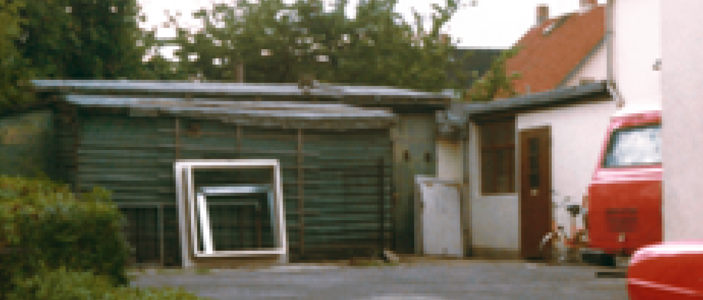

@@include("_header.html")
Цепные приводы серии CDC в ЖК в Хабаровске
Fraser Suites соответствует высоким стандартам Alsterfleet
Современная противопожарная защита здания исторической важности, отвечающего даже самым высоким стандартам
Старое офисное здание Налогового управления Гамбурга («Oberfinanzdirektion» или «OFD») считается достопримечательностью города. Здание администрации после трёхлетнего ремонта теперь работает как 5-звездочный отель. С сентября 2019 года Fraser Suites Hamburg расположилось в здании, которое оборудовано в роскошном стиле 1920-х годов. Переоборудование здания сопровождалось высокими требованиями с точки зрения конструкционного проектирования и сохранения архитектурного облика здания. Однако гамбургские архитекторы ГЭУ смогли адаптировать здание к действующим правилам противопожарной защиты. Эта цель была достигнута в тесной координации с управлением по охране памятников, отделом инспекции зданий, пожарной службой, экспертами по предотвращению пожаров и поставщиками решений, такими как D + H. Для этого имущество должно было быть разделено на отдельные дымовые и пожарные отсеки. Отделение лестничных клеток от коридоров отеля было лишь одной из необходимых мер. Это было достигнуто установкой стеновых элементов из огнестойкого стекла, а также дымовых и пожарных дверей.
Специалисты компании D + H Deutschland GmbH оказали поддержку проектировщику Implenia Hochbau GmbH в выборе и планировании всех устройств для вентиляции и дымоудаления (SHEV). Для соответствия европейским стандартам дымоудаления D + H оборудовала окна лестничной клетки оконными приводами. Всего здесь используется 38 синхронно управляемых цепных приводов D + H. Управление этими оконными приводами обеспечивается с помощью 7 пультов управления дымоудалением D + H. Дополнительная панель управления дымоудалением D + H работает под крышей, управляя приводами всех окон крыши. Это то, что позволило D + H достичь эффективной дымо- и теплоотводящей вентиляции, которая соответствовала даже строгим архитектурным стандартам при реновации исторических зданий.
Мы любим разрабатывать решения, которые удовлетворяют основные потребности всех людей: воздух + жизнь. Как производитель в сфере обеспечения свежего воздуха и спасения жизней, мы не просто производим интеллектуальные системы, которые открывают и закрывают окна в зданиях. D + H занимается не только технологиями дымоудаления и естественной вентиляции. Мы заставляем здания дышать! А это значит, что мы приносим людям защиту и безопасность, а также комфорт и благополучие. Настолько, что мы основали нашу претензию.
Подзаголовок
Заголовок
-

D + H был активным в качестве сильного бренда на протяжении вот уже более 50 лет.
-
D + H был активным в качестве сильного бренда на протяжении вот уже более 50 лет.22
-
Стартап-проект компании «Дингфельдер и Хадлер» (позднее - «D+H»), был запущен в 1968 году в мастерской на Брокдорффштрассэ под Гамбургом33.
Старое офисное здание Налогового управления Гамбурга («Oberfinanzdirektion» или «OFD») считается достопримечательностью города. Здание администрации после трёхлетнего ремонта теперь работает как 5-звездочный отель. С сентября 2019 года Fraser Suites Hamburg расположилось в здании, которое оборудовано в роскошном стиле.
Fraser Suites соответствует высоким стандартам Alsterfleet
Современная противопожарная защита здания исторической важности, отвечающего даже самым высоким стандартам
Старое офисное здание Налогового управления Гамбурга («Oberfinanzdirektion» или «OFD») считается достопримечательностью города. Здание администрации после трёхлетнего ремонта теперь работает как 5-звездочный отель. С сентября 2019 года Fraser Suites Hamburg расположилось в здании, которое оборудовано в роскошном стиле 1920-х годов. Переоборудование здания сопровождалось высокими требованиями с точки зрения конструкционного проектирования и сохранения архитектурного облика здания. Однако гамбургские архитекторы ГЭУ смогли адаптировать здание к действующим правилам противопожарной защиты.
Интересные события
Популярные статьи
-
05.05.21

В жилом комплексе в Хабаровске установлены цепные приводы серии CDC на 230V, со специальным изгибом
-
05.05.21
В жилом комплексе в Хабаровске установлены цепные приводы серии CDC на 230V, со специальным изгибом
-
05.05.21
В жилом комплексе в Хабаровске установлены цепные приводы серии CDC на 230V, со специальным изгибом
-
05.05.21
В жилом комплексе в Хабаровске установлены цепные приводы серии CDC на 230V, со специальным изгибом
@@include("_footer.html")